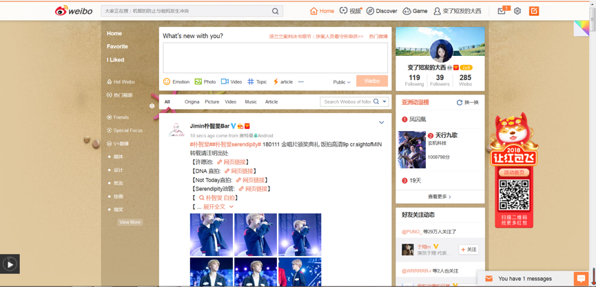
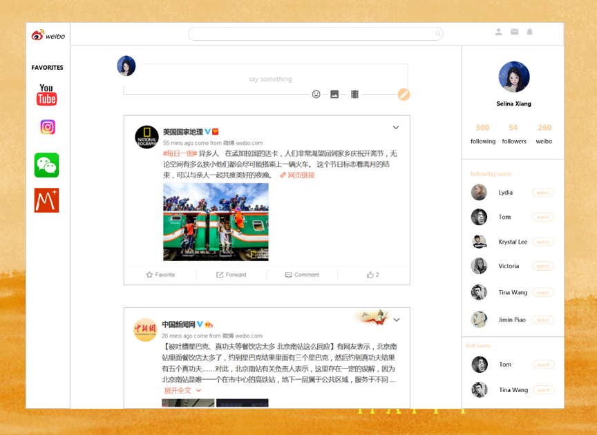

Weibo is similar to Twitter, and users can share pictures, video, articles and so on. Weibo is short for MicroBlog, which is a kind of blog. It is a broadcast social network platform that shares short and real-time information through the attention mechanism. The number of weibo users is huge, and by September 2017, there are 376 million monthly active users.
Here is the original homepage of weibo.
Here is the homepage of weibo I redesign.
There is a lot of white space on the original page, but there is a lot of content on the page so they have to be crowded together, which makes the page less concise. In order to fully use the space, I extend the main content but keep the white space around.
As the space becomes larger, I widen the spacing between the controls in the user information section.
At the top of the navigation bar, there are a lot of buttons, but there are redundant buttons, and there are buttons that are not used. For example, the home button and the home button in the left navigation bar are repeated. The game buttons are not commonly used in many ways, and can be deleted or placed in the left-most favorite bar, because users who regularly check the relevant information of the game must have a specific home page that is frequently accessed.
On the right side, below the user information in the original interface are some ads (hot users) and people users care about. I reduced some additional information, leaving only the user profile and name. If the user wants to see the specific information, just click the watch button to view it
In the left side information bar, I let user’s favorite directly displayed, user can click the head portrait to see directly, instead of clicking the ‘favorite’ button to enter a new page and then click the head portrait entering the home page.
In the place where the news is released, I use ICONS instead of the original icon + text button to make the news section more readable and easy to understand, without having to browse a lot of information at once.
The main color of weibo is orange, I wanted to use it as the background color of the main content, but it destroyed the conciseness of the home page, so I just use it as the color of background of the page and the color of some main words and button.